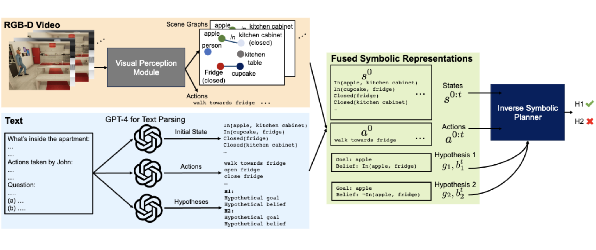
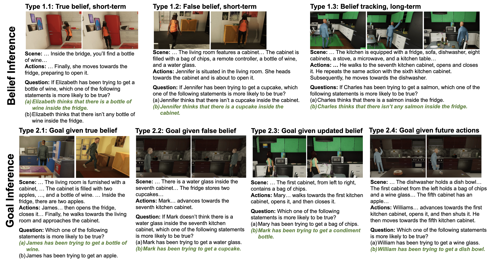
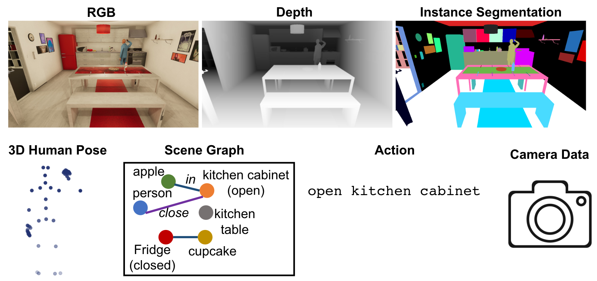
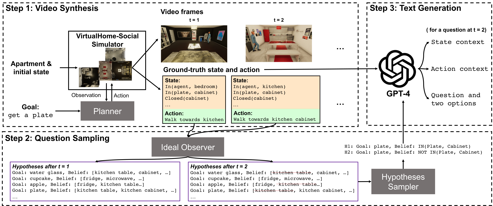
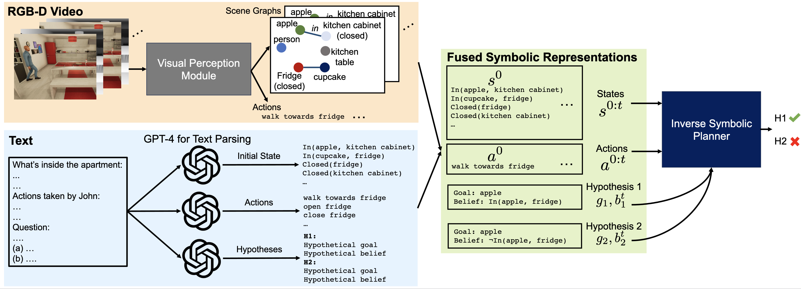
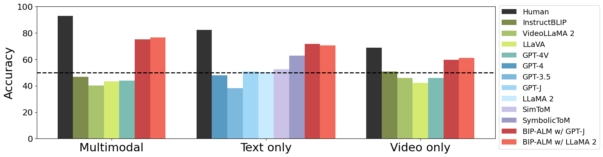
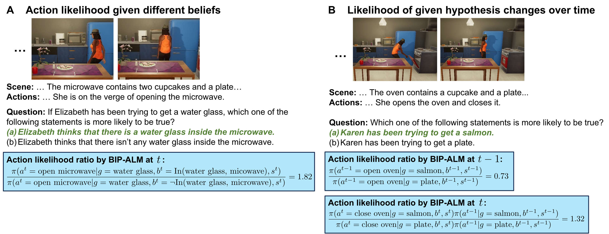
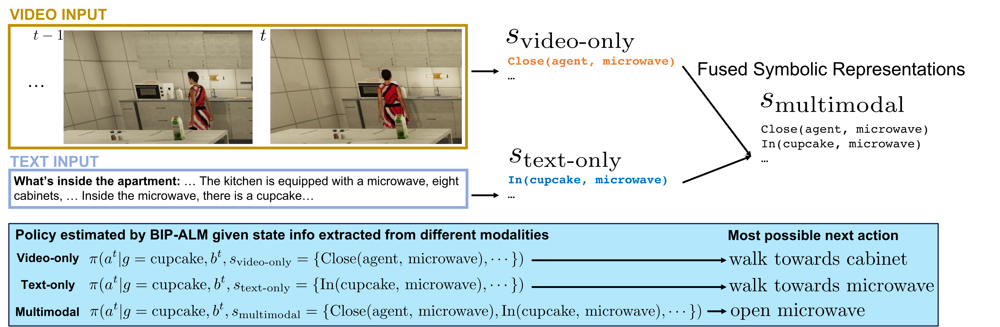

Theory of Mind (ToM), the ability to understand people's mental states, is an essential ingredient for developing machines with human-level social intelligence. Recent machine learning models, particularly large language models, seem to show some aspects of ToM understanding. However, existing ToM benchmarks use unimodal datasets — either video or text. Human ToM, on the other hand, is more than video or text understanding: people can flexibly reason about another person's mind based on conceptual representations (goals, beliefs, plans) extracted from any available data.
To address this, we introduce MMToM-QA, a multimodal Theory of Mind question answering benchmark that comprehensively evaluates machine ToM both on multimodal data and different kinds of unimodal data about a person's activity in a household environment. We further propose BIP-ALM (Bayesian Inverse Planning Accelerated by Language Models), a novel method that extracts unified representations from multimodal data and uses language models for scalable Bayesian inverse planning. Experiments show that LLMs and LMMs still lack robust ToM capacity, while BIP-ALM delivers promising results by combining model-based mental inference with language models.
MMToM-QA systematically evaluates the cognitive ability to understand people's minds both on multimodal data and different unimodal data. It consists of 600 questions spanning seven categories that evaluate belief inference and goal inference in rich and diverse household scenarios. Each belief type has 100 questions (300 total); each goal type has 75 questions (300 total).
The benchmark and usage instructions are in the GitHub repository. A text-only version is available on Hugging Face.


Each question is paired with a clip of the full activity as RGB-D frames, plus a text description of the scene and the actions taken by the person in that clip.


We propose BIP-ALM to engineer multimodal Theory of Mind. The method:

We evaluate LLMs (GPT-4, LLaMA 2) on the text-only version and large multimodal models (GPT-4V, InstructBLIP, LLaVA) on the multimodal and video-only versions, alongside human performance.

BIP-ALM reasons about mental states and tracks their change over time, benefiting from:
This can be seen as an inference-time scaling strategy, enabling human-like reasoning by integrating language models, agent models, and world models in a scalable, cognitively grounded way.


@inproceedings{jin2024mmtom,
title = {MMToM-QA: Multimodal Theory of Mind Question Answering},
author = {Jin, Chuanyang and Wu, Yutong and Cao, Jing and Xiang, Jiannan
and Kuo, Yen-Ling and Hu, Zhiting and Ullman, Tomer
and Torralba, Antonio and Tenenbaum, Joshua and Shu, Tianmin},
booktitle = {Proceedings of the 62nd Annual Meeting of the Association
for Computational Linguistics (Volume 1: Long Papers)},
pages = {16077--16102},
year = {2024}
}